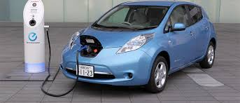
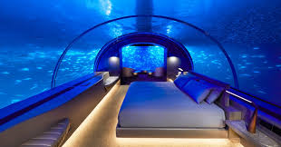
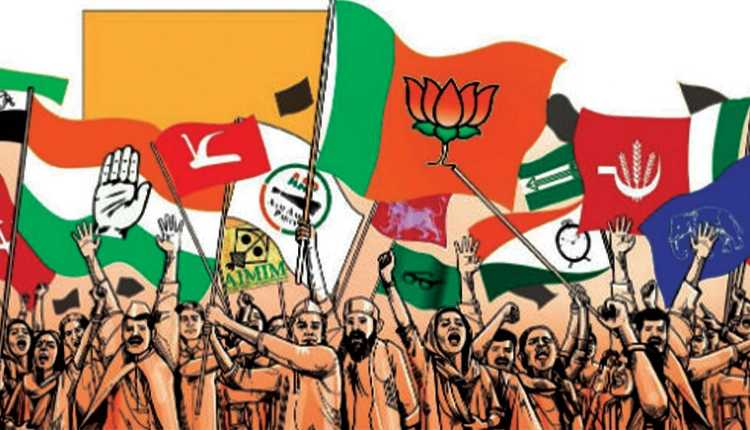

ELECTRIC CARS : THE FUTURE OF TRANSPORTATION

An electric car is an automobile that is propelled by one or more electric motors,
using energy stored in rechargeable batteries. The first practical electric cars
were produced in the 1880s.[1] Electric cars were popular in the late 19th century
and early 20th century, until advances in internal combustion engines, electric
starters in particular, and mass production of cheaper petrol (gasoline) and diesel
vehicles led to a decline in the use of electric drive vehicles.
While an electric car's power source is not explicitly an on-board battery, electric
cars with motors powered by other energy sources are typically referred to by a
different name. An electric car carrying solar panels to power it is a solar car,
and an electric car powered by a gasoline generator is a form of hybrid car.
Continued on Next page
World's first underwater hotel villa

The Muraka[1] is the world's first underwater hotel villa. It is connected
by jetty to the Hilton's Conrad Hotels Maldives Rangali Island[2] resort in
the Maldives.
Continued on 13th page
World's first underwater hotel villa
The Muraka[1] is the world's first underwater hotel villa. It is connected
by jetty to the Hilton's Conrad Hotels Maldives Rangali Island[2] resort in
the Maldives.
Continued on 13th page
World's first underwater hotel villa
The Muraka[1] is the world's first underwater hotel villa. It is connected
by jetty to the Hilton's Conrad Hotels Maldives Rangali Island[2] resort in
the Maldives.
Continued on 13th page
World's first underwater hotel villa
The Muraka[1] is the world's first underwater hotel villa. It is connected
by jetty to the Hilton's Conrad Hotels Maldives Rangali Island[2] resort in
the Maldives.
Continued on 13th page
TEN Books That Will Change Your Life Forever
This is a dynamic list and may never be able to satisfy particular standards for
completeness. You can help by expanding it with reliably sourced entries.
Usually, books about positive thinking or optimism will reveal how an improved
attitude will also lead to a more successful and healthy live. Health books tend
to have at least a significant part on spirituality.
POLITICS

Elections to 24 Rajya Sabha seats to be held on 19 June, announces EC.
Elections for 24 Rajya Sabha seats spread across 10 states will be held on 19 June,
the Election Commission announced on Monday. Elections for 18 of these 24 seats were
deferred due to the coronavirus pandemic.
Of these 18 seats, four each are from Andhra Pradesh and Gujarat, three each from
Madhya Pradesh and Rajasthan, two from Jharkhand, and one each from Manipur and Meghalaya.
The EC also announced that Rajya Sabha polls for a total of six seats in Arunachal Pradesh,
Karnataka and Mizoram will also be held on 19 June along with the elections that were
deferred from March.
Continued on Page 2
India now fifth worst-affected by Covid-19, surpasses Spain
India is now among the five worst-affected countries by the coronavirus disease.
It achieved the grim milestone on Saturday evening when the total tally of infections
reached 2,45,670. Spain so far has recorded 2,41,310 cases, according to Johns
Hopkins University.
These 10 states have 84% of India’s Covid-19 cases
Ten states with the highest number of confirmed cases of the coronavirus disease (Covid-19) account for 84% of the country’s tally and 95% of the fatalities.
These states are Maharashtra, Tamil Nadu Delhi, Gujarat, Rajasthan, Uttar Pradesh, Madhya Pradesh, West Bengal, Karnataka and Bihar.
However, a higher number of Covid-19 tests per million population by a state may not necessarily mean more confirmed cases detected or high fatality rates.
Hwaja Yunus custodial death: Four suspended Mumbai cops reinstated
SIXTEEN YEARS after being suspended for their alleged involvement in the custodial death
of 27-year-old Khwaja Yunus in January 2003, four policemen were reinstated on Friday and
resumed duty on Saturday in the city’s police force.
Assistant police inspector Sachin Vaze and police constables Rajendra Tiwari,
Sunil Desai resumed duty in the local arms unit. Constable Rajaram Nikam was reinstated in
the motor vehicle department. The four, suspended in different months in 2004, continue
to face trial on charges including murder and destruction of evidence.